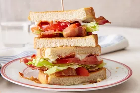

BLT sandwich
his BLT is classic: bacon, lettuce, and tomato just delicious and it's soo good.

Ingredient
- 4 slices bacon
- 2 leaves lettuce
- 2 sliced tomato
- 2 sliced bread,tomatoes
- 1 tablespoon mayonnaise
Guide
- Gather up all ur Ingredient
:max_bytes(150000):strip_icc():format(webp)/AR-209578-blt-DDMFS-step-1-a8b6db0bb4ed461b967146b95d9fcb24.jpg)
- Cook bacon in a large, deep skillet over medium-high heat until evenly browned, about 10 minutes. Drain bacon on a paper towel-lined plate.
:max_bytes(150000):strip_icc():format(webp)/AR-209578-blt-DDMFS-step-2-b672c6294b5b4bd099e09c76d80acf70.jpg)
- Arrange cooked bacon, lettuce, and tomato slices on one slice of bread. Spread mayonnaise on the other slice of bread.
:max_bytes(150000):strip_icc():format(webp)/AR-209578-blt-DDMFS-step-4-4887be25ea354989bba7ec15447612a8.jpg)
- Close to make a sandwich.